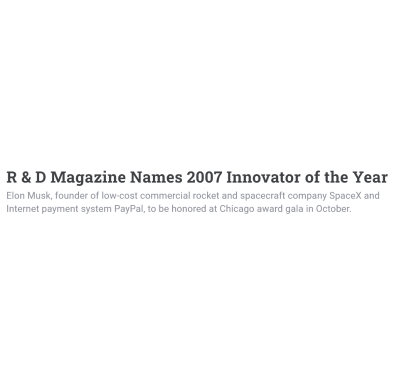
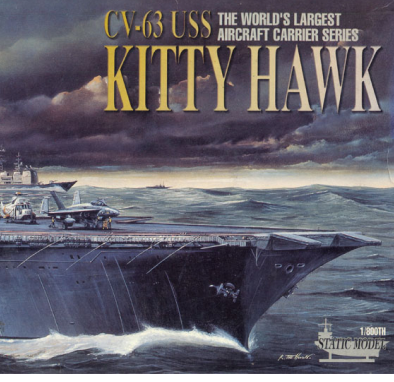
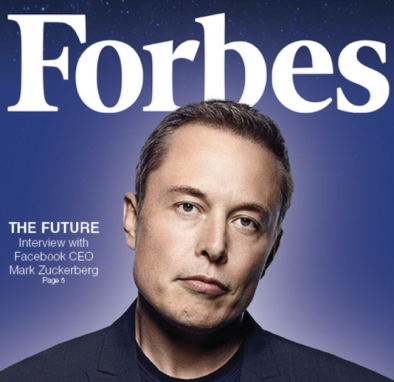
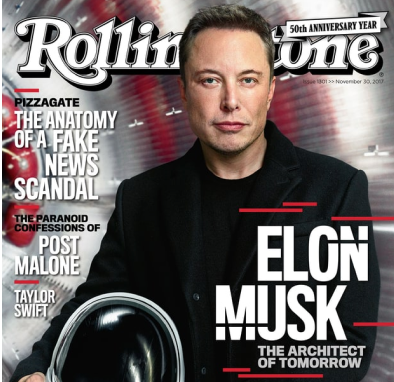

Logros de un magnate
PREMIOS
- Se entrega el premio al Diseño de un producto por el Tesla Roadster en nombre de Global Green.
- Se le galardona por Diseño para mejorar la vida con su Tesla Roadster en nombre de Index Design Award.
- Inc Magazine le entrega el premio al Emprendedor del Año con sus proyectos Tesla & SpaceX.
- Se entrega el premio George Low en nombre de American Institute of Aeronautics por su Contribución al transporte aeroespacial con el Falcon 1.
- Se otorga el premio National Conservation Achievement Award con sus empresas Tesla Motors, SolarCity en nombre de National Wildlife Federation.
- Gracias a los Avances en la Comercializacion del Espacio recibe el premio Heinlein en nombre de National Space Society (NSS).
- Se entrega el máximo honor de la Federación Aeronáutica Internacional el cual es el Gold Space Medal gracias al diseño del primer cohete en alcanzar órbita con fondos privados.
2006
2007
...
2008
...
2011
...
NOMINACIONES
- La Revista R&D Magazine nombró a Elon como el Innovador del Año por sus proyectos SpaceX, Tesla, SolarCity.
- La Revista Time incluyó a Elon en su Top 100 personas que influyen al mundo.
- Elon fue reconocido como Leyenda viviente de la aviacion por su Transbordador Espacial (F9/Dragon) en nombre de la Fundación Kitty Hawk.
- Se incluye a Elon en los 20 directores ejecutivos de menos de 40 años más poderosos en los Estados Unidos por la revista Forbes.
- Business Insider reconoció a Musk en sus 10 principales visionarios de negocios que crean valor para el mundo.
- Elon fue portada de la Revista Rolling Stone incluyéndose entre las 25 personas que están dando forma a los próximos 50 años.
2007
2010
...
2011
2016
2017

R&D Magazine

Time Magazine

Foundation Kitty Hawk

Forbes Magazine
Bussiner Insider
